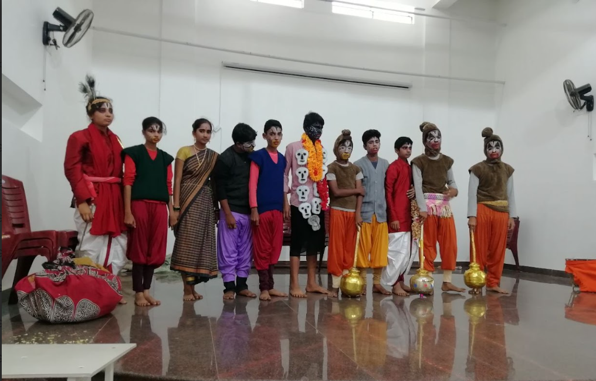
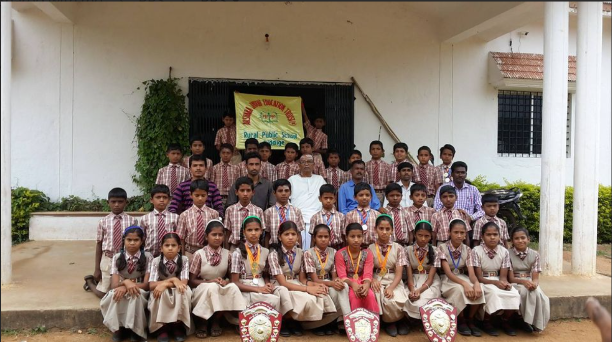
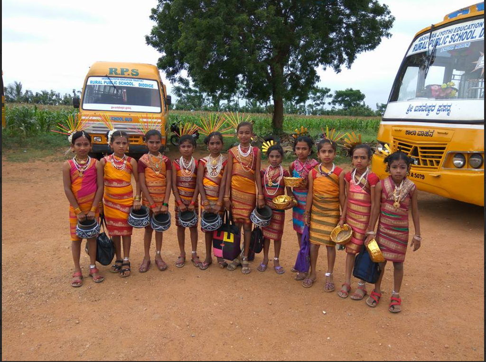

Our students have consistently showcased exceptional talent in the performing arts, particularly in theatre. They have actively participated in district-level drama competitions and have gone on to represent our school at the state level, earning recognition for their creativity, stage presence, and teamwork. These achievements reflect not only their dedication but also the strong foundation in cultural education provided at Rural Public School Diddige.

Our students have demonstrated remarkable performance in various sports and athletic events. With disciplined training and team spirit, they have represented our school at the district level and proudly advanced to the state-level competitions in track and field,kho kho, kabaddi, and volleyball. These milestones are a testament to our school’s commitment to physical education and holistic student development.

At Rural Public School Diddige, cultural events are celebrated with great enthusiasm and inclusivity. From traditional festivals like Independence Day, Kannada Rajyotsava, and Deepavali to school-organized cultural days, our students actively participate in music, dance, art, and drama performances. These celebrations not only nurture creativity and expression but also promote respect for diversity and our rich cultural heritage.
© 2025 Rural Public School Diddige. All rights reserved.